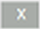

MM8000 Migration
Scenario
You want to import an MM8000 configuration database into Desigo CC.
For general information about the MM8000 migration, including compatibility and limits, see the reference section.
To get a detailed report of the MM8000 configuration, you can use the reporting tool available on the distribution media, in the folder AdditionalSW\MM8000MigrationReport.
Prerequisites
- The following extension module is installed and included in the active project:
- Danger Management > MM8000 Conversion Tools.
- System Manager is in Engineering mode.
- System Browser is in Management View.
1 – Prepare the MM8000 Import
- You created a new project, or opened an existing project, and fully configured the networks that include the subsystems of the MM8000 configuration that you want to import.
For all subsystems, make sure to specify the same local and/or IP address as in the MM8000 configuration. In addition, it is recommended to use the same textual description as in MM8000 to simplify any alignment check.
For a detailed checklist, refer to Subsystem Network Preparation Checklist. - If you have user-defined views where you want to import MM8000 geographical tree, you have selected Create softlink node for these views.
- The MM8000 backup file (*.BAK) is available locally or over the network.
- In System Browser, select Project > System Settings > Conversion Tools > MM8000 Importer.
NOTE: If the MM8000 Importer node is not available, select the parent node Conversion Tools and select New > MM8000 Importer.
> MM8000 Importer. - Select the MM8000 Importer tab.
- Click Select MM8000 Back-Up file to import
 and browse to the MM8000 backup file.
and browse to the MM8000 backup file. - Select the file and click Open.
- The first page of the MM8000 Import tool shows up. You can proceed to the next page and then come back by clicking the Next
 and Previous
and Previous  arrow icons.
arrow icons.

NOTE:
In case of a distributed, multi-server system (refer to the SMC documentation), the MM8000 import can only create new objects (Views and Graphics) on the local system.
2 – Select Destination Views for the MM8000 Import
In this step you can customize the selection of MM8000 geographical trees to import into Desigo CC views structured in exactly the same way as in MM8000.
NOTE: Skip this step if no geographical trees exist in the MM8000 configuration.
- (Optional) Click and skip this step if you want to import all trees with standard mapping, and create new user-defined views named after the MM8000 geographical tree names.
- (Optional) In the MM8000 Importer tab, clear the check box on the left-hand side of the list to exclude the corresponding tree from the import.
- (Optional) Customize the destination views:
a. In System Browser, select an existing user-defined view as destination.
b. Drag the user-defined view into the Root Node Where to Import field of the corresponding tree.
NOTE: Click
on the right of the field to clear a previous view association.
c. (Optional) Clear the Include Geo Tree Name option to skip importing the geographical tree name at the top of the view structure. - (Optional) Modify the default mapping of the view object types. You can define how to map the following MM8000 Object types into System Object types (by default, the same object types are used):
- Root (Campus)
- Building
- Floor
- Section
- Room
- Generic - Check that the panels imported from the MM8000 and the Target Panels match. If not, select the correct Target Panel from the drop-down list.
NOTE: In case of duplicate assignment to a single panel, an error message will appear and you will not be able to proceed to the next step. - Click to proceed to the next step.
3 – Select Graphics for MM8000 Import
In this step you select the MM8000 Maps to import into Desigo CC graphics. All pages associated to the map are also imported.
NOTE: Skip this step if no pages exist in the MM8000 configuration.
- The list of the available MM8000 maps displays in the MM8000 Importer tab.
All available trees are selected by default.
- (Optional) Clear the check box on the left hand side of the list to remove one or more items.
- On the upper section of the tab, select the Symbol style for representing all objects on the imported graphics. The list of available styles may vary depending on the installed extension modules. As a general reference, the following is a list of typical styles:
- Any: generic selection, NOT recommended (select a specific style)
- 2D_EU_AT, two-dimensional symbols for Austria
- 2D_EU_DE, two-dimensional symbols for Germany and DIN-approved graphics
- 2D_NA_NFPA, two-dimensional symbols for North America and NFPA-approved graphics
- 3D, three-dimensional symbols, generic, NOT recommended (select a more specific 3D-style)
- 3D_EU, three-dimensional symbols for Europe
- 3D_NA, three-dimensional symbols for North America
- Click to proceed to the next step.
4 – Run the MM8000 Import
In this step you can check your selections and run the import procedure.
- The list of the items to import (trees and maps) displays in the MM8000 Importer tab.
- Check the lists of trees and maps you are about to import.
- (Optional) If you want to modify any item of the import list, click Previous in the toolbar to go back to the previous step. After the required modifications, click Next to reach this final step again.
- Click Start
 .
. - A confirmation message displays.
- Click Yes.
- The import procedure starts.
NOTE: If the point-symbol association cannot be resolved unambiguously, for example if more than one data point is found, the import procedure prompts you to select the correct data point (choose one of the points and click OK) or remove the symbol by clicking Cancel. - When the import procedure completes, the Import Summary dialog box displays and shows the number of items successfully imported as well as the number of warnings and errors.
- Click Summary to display the summary log file: <drive>:\Users\<username>\AppData\Local\Temp\MM8000Import_mm-dd-yyyy_nn.txt.
The file provides a report that indicates errors and warnings. - Click Details to display the detailed log file: <drive>:Users\<username>\AppData\Local\Temp\MM8000Import_Results yyymmdd hhmmss.txt). The CSV file contains a record of all actions performed.
For examples of log files, see MM8000 Import Log Files.
In case of errors, see MM8000 Migration Troubleshooting and MM8000 Import Compatibility and Limits.